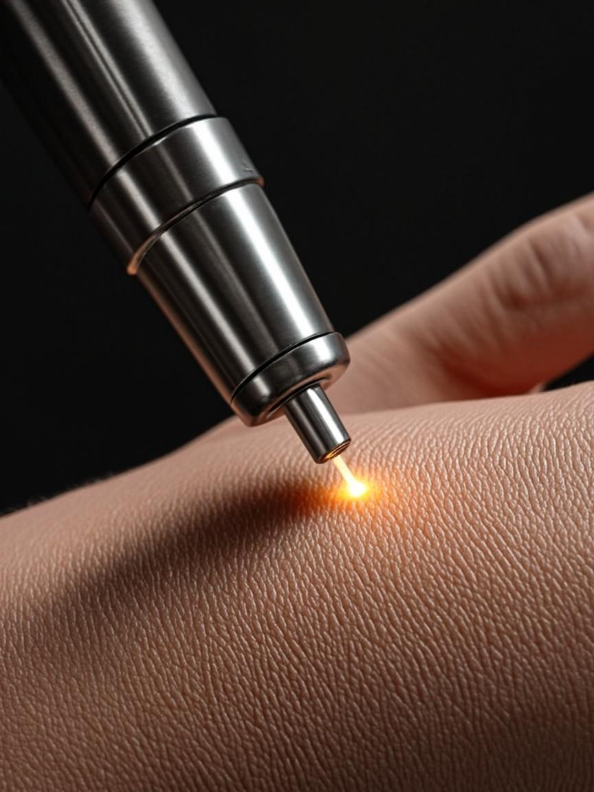

Every tattoo tells a different story, which is why no two removal treatments should be the same. At ZOE, we offer advanced tattoo removal solutions customized to your tattoo's size, color, age, ink composition, and your unique skin type. Our personalized approach ensures the safest, most effective treatment plan possible—helping you achieve clearer skin with confidence and exceptional results.
Powered by advanced picosecond technology, PicoSure® is one of the most effective solutions for removing unwanted tattoos. By delivering ultra-fast energy pulses, it breaks down ink particles with exceptional precision, allowing the body to naturally clear them more efficiently. Suitable for a wide range of tattoo colors and styles, PicoSure helps achieve faster results, fewer treatment sessions, and minimal impact on surrounding skin—providing a comfortable and highly effective removal experience.
For complex, multi-colored, and deeply saturated tattoos, our dual-technology approach combines the strengths of both picosecond and nanosecond laser systems. By targeting ink particles of varying sizes and depths, this advanced treatment strategy enhances pigment breakdown and improves overall clearance efficiency. Ideal for professional tattoos and challenging colors, this customized approach helps accelerate results while maintaining the highest standards of safety and skin care.
Not every tattoo needs complete removal. Our Partial and Faded Cover-Up treatments are designed to strategically lighten existing tattoos, creating the ideal foundation for new artwork. Using precise laser technology, we selectively reduce ink density while preserving areas you wish to keep, ensuring optimal preparation for a seamless cover-up. Whether you're refreshing an old design or making way for something entirely new, our customized approach helps your tattoo artist achieve the best possible results.
Our Sensitive Skin Treatment is designed to provide safe, effective tattoo removal for clients with delicate skin, darker skin tones, or unique skin care concerns. Using customized laser settings and a personalized treatment approach, we carefully balance optimal ink clearance with skin protection. Every treatment begins with a thorough skin assessment to ensure the safest and most effective plan for your individual needs, helping minimize unwanted skin reactions while delivering exceptional results.
Not all tattoos respond to laser treatment in the same way. Factors such as ink composition, color, depth, age, and placement all influence the removal process. At ZOE Studio, we tailor every treatment plan to the unique characteristics of your tattoo, using advanced laser technology and specialized techniques to achieve the safest, most effective results possible. Whether you're removing permanent makeup, cosmetic pigments, professional artwork, or heavily saturated designs, our customized approach ensures optimal clearance while prioritizing the health and appearance of your skin.
Permanent makeup treatments require exceptional precision and care due to their placement on delicate facial areas. Whether you're looking to remove eyebrow microblading, lip blushing, or eyeliner tattoos, our specialists use advanced laser technology and customized treatment settings to safely target unwanted pigment while protecting the surrounding skin. Every treatment plan is tailored to your unique skin type, pigment characteristics, and aesthetic goals, helping achieve effective results with minimal disruption to your natural appearance.
Cosmetic tattoos often require a specialized approach due to their unique pigment formulations and personal significance. Whether you're looking to remove areola reconstruction, scar camouflage, or skin-tone correction tattoos, our experienced specialists develop customized treatment plans designed to safely and effectively address these delicate pigments. Using advanced laser technology and careful treatment protocols, we prioritize both optimal results and skin health, ensuring a comfortable and supportive experience throughout your removal journey.
Amateur and stick-and-poke tattoos often respond well to laser treatment due to their lighter ink saturation and inconsistent application depth. Whether your tattoo was hand-poked, self-applied, or created using non-professional techniques, our specialists customize each treatment to safely target the pigment while protecting the surrounding skin. At ZOE Studio, we carefully assess the tattoo's characteristics and develop a personalized removal plan designed to achieve effective clearance with optimal comfort and results.
Multi-color tattoos require advanced technology and expertise to effectively target a wide range of pigments. From rainbow tattoos and watercolor artwork to bold new school designs, our specialists use customized treatment strategies to address each color with precision and care. By utilizing advanced laser systems and tailored wavelength selection, we can effectively treat challenging pigments while maximizing clearance and preserving the health of your skin throughout the removal process.
Tribal and blackwork tattoos contain high concentrations of dense black pigment, making them some of the most challenging tattoos to remove. While these designs often require a longer treatment journey, black ink typically responds very well to advanced laser technology, allowing for effective and consistent fading over time. At ZOE Studio, we create customized treatment plans that balance powerful ink reduction with proper skin recovery, helping achieve optimal clearance while maintaining the health and integrity of your skin.
Traumatic tattoos are caused by accidents that embed foreign particles beneath the skin, such as road debris, pencil graphite, gravel, or other materials. Unlike traditional tattoos, these pigments can vary significantly in composition and depth, requiring a specialized treatment approach. At ZOE Studio, we perform a thorough assessment to determine the characteristics of the embedded particles and develop a personalized treatment plan designed to safely reduce their appearance. Our careful, progressive approach helps restore clearer skin while prioritizing comfort, safety, and optimal healing.

At the heart of our treatments is PicoSure®, one of the most advanced laser technologies available for tattoo removal. Using ultra-fast picosecond energy pulses, PicoSure® targets and breaks down ink particles with exceptional precision, helping the body clear unwanted pigment more efficiently while minimizing impact on surrounding skin.
This innovative technology delivers effective results across a wide range of tattoo colors and skin types, offering a more comfortable treatment experience with reduced downtime and enhanced clearance potential.
Take the first step toward a fresh start with confidence. Schedule your complimentary consultation today, and our experienced specialists will create a personalized treatment plan tailored to your tattoo, skin type, and aesthetic goals. Whether you're seeking complete removal, a cover-up preparation, or expert guidance on your options, we're here to help you achieve the best possible results. Clearer skin starts with a conversation.
Book Free Consultation